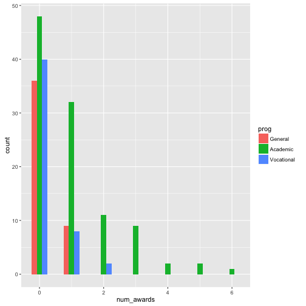
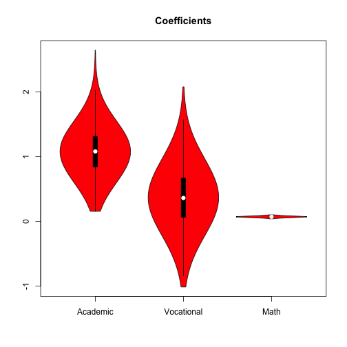
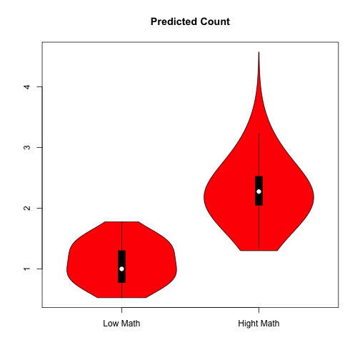

- Fit the Model to the Data
- Obtain the coefficients and variance covariance matrix.
- Simulate coefficients from multivariate normal distribution.
- Use observed values to calculate the probability of being in eaching category. --- .class #id
Models for Counts
Poisson, Negative Binomial, Zero-Inflated
William Reed
The Observed Value Approach for MNL
## Loading required package: foreign
## Loading required package: mlogit
## Loading required package: Formula
## Loading required package: maxLik
## Loading required package: miscTools
##
## Please cite the 'maxLik' package as:
## Henningsen, Arne and Toomet, Ott (2011). maxLik: A package for maximum likelihood estimation in R. Computational Statistics 26(3), 443-458. DOI 10.1007/s00180-010-0217-1.
##
## If you have questions, suggestions, or comments regarding the 'maxLik' package, please use a forum or 'tracker' at maxLik's R-Forge site:
## https://r-forge.r-project.org/projects/maxlik/
Estimated Coefficients
test
##
## Call:
## mlogit(formula = prog ~ 1 | ses + write, data = ml_1, reflevel = "academic", probit = FALSE, method = "nr", print.level = 0)
##
## Coefficients:
## general:(intercept) vocation:(intercept) general:sesmiddle
## 2.852186 5.218200 -0.533291
## vocation:sesmiddle general:seshigh vocation:seshigh
## 0.291393 -1.162832 -0.982670
## general:write vocation:write
## -0.057928 -0.113603
What can we extract from the text object?
coef(test)
## general:(intercept) vocation:(intercept) general:sesmiddle
## 2.85218622 5.21820011 -0.53329101
## vocation:sesmiddle general:seshigh vocation:seshigh
## 0.29139311 -1.16283199 -0.98267029
## general:write vocation:write
## -0.05792841 -0.11360264
## attr(,"fixed")
## general:(intercept) vocation:(intercept) general:sesmiddle
## FALSE FALSE FALSE
## vocation:sesmiddle general:seshigh vocation:seshigh
## FALSE FALSE FALSE
## general:write vocation:write
## FALSE FALSE
What can we extract from the text object?
vcov(test)
## general:(intercept) vocation:(intercept)
## general:(intercept) 1.36058026 0.66778357
## vocation:(intercept) 0.66778357 1.35384619
## general:sesmiddle -0.09395500 -0.04451320
## vocation:sesmiddle -0.06677804 -0.10785805
## general:seshigh -0.05981289 -0.03807395
## vocation:seshigh -0.06772187 -0.12863979
## general:write -0.02383235 -0.01124761
## vocation:write -0.01099920 -0.02425350
## general:sesmiddle vocation:sesmiddle general:seshigh
## general:(intercept) -0.0939550025 -6.677804e-02 -0.0598128920
## vocation:(intercept) -0.0445132041 -1.078580e-01 -0.0380739460
## general:sesmiddle 0.1968982082 9.180481e-02 0.1225343339
## vocation:sesmiddle 0.0918048114 2.269319e-01 0.0636261299
## general:seshigh 0.1225343339 6.362613e-02 0.2644216472
## vocation:seshigh 0.0641289336 1.601999e-01 0.0993138541
## general:write -0.0005216298 7.442614e-05 -0.0011822676
## vocation:write -0.0003719121 -1.062758e-03 -0.0004612158
## vocation:seshigh general:write vocation:write
## general:(intercept) -6.772187e-02 -2.383235e-02 -0.0109992033
## vocation:(intercept) -1.286398e-01 -1.124761e-02 -0.0242534988
## general:sesmiddle 6.412893e-02 -5.216298e-04 -0.0003719121
## vocation:sesmiddle 1.601999e-01 7.442614e-05 -0.0010627581
## general:seshigh 9.931385e-02 -1.182268e-03 -0.0004612158
## vocation:seshigh 3.547000e-01 8.439272e-05 -0.0006283594
## general:write 8.439272e-05 4.584286e-04 0.0002039003
## vocation:write -6.283594e-04 2.039003e-04 0.0004937239
So Let's do the simulations:
#observed values for multinomial
library(MASS)
library(mvtnorm)
n.draws <- 50
set.seed(123)
sim.coefs <- rmvnorm(n.draws, coef(test), vcov(test))
head(sim.coefs)
## general:(intercept) vocation:(intercept) general:sesmiddle
## [1,] 2.018905 4.679916 0.22694697
## [2,] 1.860435 4.433063 0.09967418
## [3,] 2.865965 3.225307 -0.43291413
## [4,] 1.596803 3.057821 -0.21782745
## [5,] 4.050451 6.424496 -0.12348334
## [6,] 2.023477 4.742814 -0.69810113
## vocation:sesmiddle general:seshigh vocation:seshigh general:write
## [1,] 0.7600901 -0.7393952 0.09943457 -0.05059648
## [2,] 0.6310082 -0.7624847 -0.74454846 -0.04798940
## [3,] 0.1768749 -1.6194320 -1.11603634 -0.06157040
## [4,] 0.6889271 -1.4652665 -0.18553688 -0.03585208
## [5,] 0.6108127 -0.8002564 -0.91613649 -0.08593814
## [6,] 1.0354473 -0.7117518 -1.21330788 -0.04504081
## vocation:write
## [1,] -0.11687325
## [2,] -0.09712980
## [3,] -0.07585559
## [4,] -0.08011949
## [5,] -0.14145209
## [6,] -0.11515655
Now we have our simulated coefficients from the MNL Model
test <- mlogit(prog ~ 1 | ses + write, data = ml_1,
reflevel="academic", probit=FALSE)
test1 <- mlogit(prog ~ 1 | ses + write, data = ml_1,
reflevel="academic", probit=FALSE,alt.subset=c("general","academic"))
hmftest(test,test1)
##
## Hausman-McFadden test
##
## data: ml_1
## chisq = 0.5438, df = 4, p-value = 0.9691
## alternative hypothesis: IIA is rejected
Models for Counting: Poisson
count<-rpois(1000,5)
hist(count,col="blue")

The Poisson Regression Model
- \(E(y)=\mu\)
- \(Var(y)=E(y)=\mu\)
- \(Pr(y|\mu)=\frac{exp(-\mu)\mu^y}{y!}\)
- \(\mu_i=E(y_i|x_i)=exp(\mathbf{x_i\beta})\)
R Example:
p <- read.csv("http://www.ats.ucla.edu/stat/data/poisson_sim.csv")
p <- within(p, {
prog <- factor(prog, levels=1:3, labels=c("General", "Academic", "Vocational"))
id <- factor(id)
})
summary(p)
## id num_awards prog math
## 1 : 1 Min. :0.00 General : 45 Min. :33.00
## 2 : 1 1st Qu.:0.00 Academic :105 1st Qu.:45.00
## 3 : 1 Median :0.00 Vocational: 50 Median :52.00
## 4 : 1 Mean :0.63 Mean :52.65
## 5 : 1 3rd Qu.:1.00 3rd Qu.:59.00
## 6 : 1 Max. :6.00 Max. :75.00
## (Other):194
Describe the Count of Awards
library(ggplot2)
ggplot(p, aes(num_awards, fill = prog)) + geom_histogram(binwidth=.5, position="dodge")

summary(m1 <- glm(num_awards ~ prog + math, family="poisson", data=p))
##
## Call:
## glm(formula = num_awards ~ prog + math, family = "poisson", data = p)
##
## Deviance Residuals:
## Min 1Q Median 3Q Max
## -2.2043 -0.8436 -0.5106 0.2558 2.6796
##
## Coefficients:
## Estimate Std. Error z value Pr(>|z|)
## (Intercept) -5.24712 0.65845 -7.969 1.60e-15 ***
## progAcademic 1.08386 0.35825 3.025 0.00248 **
## progVocational 0.36981 0.44107 0.838 0.40179
## math 0.07015 0.01060 6.619 3.63e-11 ***
## ---
## Signif. codes: 0 '***' 0.001 '**' 0.01 '*' 0.05 '.' 0.1 ' ' 1
##
## (Dispersion parameter for poisson family taken to be 1)
##
## Null deviance: 287.67 on 199 degrees of freedom
## Residual deviance: 189.45 on 196 degrees of freedom
## AIC: 373.5
##
## Number of Fisher Scoring iterations: 6
## calculate and store predicted values
p$phat <- predict(m1, type="response")
## order by program and then by math
p <- p[with(p, order(prog, math)), ]
## create the plot
ggplot(p, aes(x = math, y = phat, colour = prog)) +
geom_point(aes(y = num_awards), alpha=.5, position=position_jitter(h=.2)) +
geom_line(size = 1) + labs(x = "Math Score", y = "Expected number of awards")
Observed Value Approach for Counts
library(obsval)
mod <- obsval(num_awards ~ prog + math, data=p,
reg.model = "poisson",
n.draws = 1000,
effect.var = "math",
effect.vals = c(65,75), # lowest to mid
verbose = TRUE)
## Estimating model...
## Done estimating model.
## Drawing simulated coefficients from posterior distribution...
## Finished drawing simulated coefficients from posterior distribution...
## Now in obsvalPredict() ...
## Constructing X.matrix ... Generating control predictions ...
## Entered computePreds()...
## Generating predictions for each set of simulated coefficients ...
## Calculated predictions for each set of simulated coefficients.
library(vioplot)
## Loading required package: sm
## Package 'sm', version 2.2-5.4: type help(sm) for summary information
##
## Attaching package: 'sm'
## The following object is masked from 'package:MASS':
##
## muscle
vioplot(mod$sim.coef[,2], mod$sim.coef[,3], mod$sim.coef[,1], names=c("Academic","Vocational","Math"),
col="red")
title("Coefficients")
#head(mod$preds)
vioplot(mod$preds[,1], mod$preds[,2], names=c("Low Math","Hight Math"),
col="red")
title("Predicted Count")

hist(mod$preds[,1],breaks=20,col="red")
hist(mod$preds[,2], breaks=20,col="grey",add=T)
box()

Test of Over dispersion
library(AER)
## Loading required package: car
## Loading required package: lmtest
## Loading required package: zoo
##
## Attaching package: 'zoo'
## The following objects are masked from 'package:base':
##
## as.Date, as.Date.numeric
## Loading required package: sandwich
## Loading required package: survival
Cameron & Trivedi (1990). Assume the mean is \(E(Y)=\mu\) and the variance is \(Var(Y)=\mu\). On may test this assumption as a null hypothesis against an alternative where \(Var(Y)=\mu+c∗f(\mu)\) where the constant \(c<0\) means under dispersion and \(c>0\) means over dispersion.
\(H_0:c=0\) vs. \(H_1:c\ne 0\) and the test statistic is asymptotically standard normal under the null.
dispersiontest(m1,trafo=1)
##
## Overdispersion test
##
## data: m1
## z = 0.53224, p-value = 0.2973
## alternative hypothesis: true alpha is greater than 0
## sample estimates:
## alpha
## 0.04725442
summary(m2 <- glm.nb(num_awards ~ prog + math, data=p))
##
## Call:
## glm.nb(formula = num_awards ~ prog + math, data = p, init.theta = 6.114661779,
## link = log)
##
## Deviance Residuals:
## Min 1Q Median 3Q Max
## -2.0322 -0.8343 -0.5039 0.2276 2.3222
##
## Coefficients:
## Estimate Std. Error z value Pr(>|z|)
## (Intercept) -5.29331 0.70416 -7.517 5.60e-14 ***
## progAcademic 1.07507 0.36699 2.929 0.0034 **
## progVocational 0.36696 0.45230 0.811 0.4172
## math 0.07107 0.01153 6.165 7.05e-10 ***
## ---
## Signif. codes: 0 '***' 0.001 '**' 0.01 '*' 0.05 '.' 0.1 ' ' 1
##
## (Dispersion parameter for Negative Binomial(6.1147) family taken to be 1)
##
## Null deviance: 257.93 on 199 degrees of freedom
## Residual deviance: 169.76 on 196 degrees of freedom
## AIC: 373.81
##
## Number of Fisher Scoring iterations: 1
##
##
## Theta: 6.11
## Std. Err.: 5.58
##
## 2 x log-likelihood: -363.811
summary(m2 <- zeroinfl(num_awards ~ prog+math| math, data=p))
## Error in summary(m2 <- zeroinfl(num_awards ~ prog + math | math, data = p)): could not find function "zeroinfl"